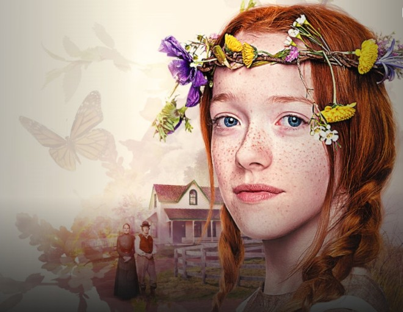

《빨간 머리 앤》(영어: Anne of Green Gables)은 캐나다의 여성작가 루시 모드 몽고메리의 1908년작 소설이다. 원제는 《그린게이블스의 앤》이다. 앤 셜리라는 감성이 풍부하고 말이 많은 소녀의 몸과 마음이 성장해 가는 과정을 풍부한 어휘력과 감성이 풍부한 문체로 묘사하고 있다. 루시의 고향이기도 한 프린스에드워드 섬의 시골인 에이번리에 대한 낭만적 묘사, 등장인물들의 감정에 대한 서술이 잘되어 있는 점이 소설의 장점이다. 독자들에게 인기를 끌면서 앤의 처녀 시절을 다룬 《에이번리의 앤》, 앤의 대학생 시절을 다룬 《레드먼드의 앤》, 앤의 고등학교 교장 시절을 다룬 《윈디 윌로우스의 앤》, 앤의 신혼 초기 시절을 다룬 《앤의 꿈의 집》 등의 여러 후속작들이 출판되었으며 앤의 아들들, 아들들의 1차 대전 참전(1명은 전사), 나아가 앤이 세상을 떠날 때까지 계속 서술되었다. 즉, 앤이 인기를 끌자 많은 작품에 앤이 등장한 것이다. 지금보다 훨씬 과거에 쓰여진 이야기이지만, 아직도 사랑받는 것은 작가의 묘사 실력과 앤의 성격 덕이다. 앤의 상상력 또한 그 이유에 포함된다.
